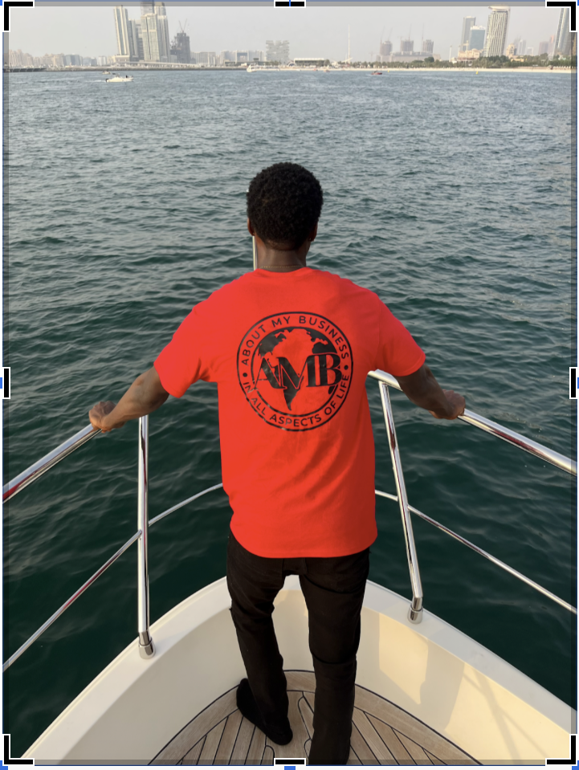

This picture was taken during a yacht party in Dubai, United Arab Emirates
Personal Background: My name is Joshua Ogundele, I was born and raised in Raleigh, North Carolina. I am currently 20 years old, and my birthdate is September 13, 2002.
Professional Background: My professional background consists of my own business as a DJ and photographer. Moreover, I do play a significant role in my mother’s catering and design business as the social media manager and working to help organize during her events.
Academic Background: After I graduated high school, I decided to attend Wake Technical Community College in Raleigh, NC for my first two years of college. Upon my completion, I transferred to UNC Charlotte to further my education and pursue my Bachelors degree in Computer Science. I am currently a senior here now ready to conquer all obstacles and/or challenges to obtain my degree.
Background in this Subject: I have taken programming courses such as Java, Python, and SQL. I’ve always had interest in making my own website, thus, I am willing to learn as much as possible to better my skills in that regard.
Primary Computer Platform: MacBook Pro, 13-inch, Apple M2 Chip, 2022; with 8 GB of memory.
Courses I'm Taking & Why:
ITSC 3155 - Software Engineering: Chosen for required credits and to learn.
ITIS 3200 - Intro to Info Security & Priv: Chosen for required credits and to learn.
ITCS 3050 - Chosen for required credits and to learn.
PHIL 3112- Design & Imp Object-oriented sys: Chosen for required credits and to learn.
ITIS 3135 - Web app Design: This class is required for my pursuit towards my degree. Moreover, like I said before I am interested in improving my skill set building a website from scratch.
Funny/Interesting Item about Yourself: I love to go to the gym.
I'd also like to Share: I am hoping to have a great experience in taking this course by learning and building genuine relationships.